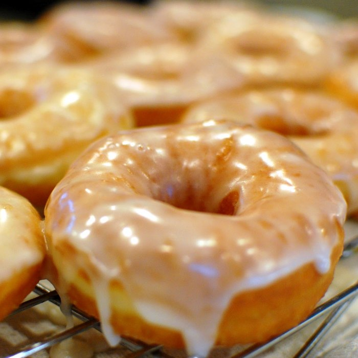

Krispy Kreme Donut

Nationality:American
Ingredients:
- Yeast: 1/4 ounce
- Water 1/4 cup
- water: 1 1/2 cups
- Sugar: 1/2 cup
- Salt: 1 tsp
- Eggs: 2
- Shortening
- Flour: 1/3 cup
- Canola Oil: 5 drops
- Sprinkling
- Milk: 1/2 cup
- Sugar: 2 cups
- Vanilla: 1 1/2 cups
- Boiling water: 6 tablespoons
- Butter: 1/3 cup
Instructions:
- Dissolve yeast in warm water in 2 1/2-quart bowl.
- Add milk, sugar, salt, eggs, shortening and 2 cups flour.
- Beat on low for 30 seconds, scraping bowl constantly.
- Beat on medium speed for 2 minutes, scraping bowl occasionally.
- Stir in remaining flour until smooth.
- Cover and let rise until double, 50-60 minutes.
- Disclaimer: Dough is ready when indentation remains when touched.
- Turn dough onto floured surface; roll around lightly to coat with flour.
- Gently roll dough 1/2-inch thick with floured rolling pin. Cut with floured doughnut cutter.
- Cover and let rise until double, 30-40 minutes.
- Heat vegetable oil in deep fryer to 350°.
- Slide doughnuts into hot oil with wide spatula.
- Turn doughnuts as they rise to the surface.
- Fry until golden brown, about 1 minute on each side.
- Remove carefully from oil (do not prick surface)
- Drain
- Glaze:
- Heat butter until melted.
- Remove from heat.
- Stir in powdered sugar and vanilla until smooth.
- Stir in water, 1 tablespoon at a time, until desired consistency.
- Dip the doughnuts into creamy glaze, set on rack.
- Serve them warm or cold and enjoy!
Source: Link